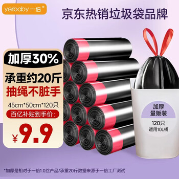

推荐款 A / 厨房主推
一倍抽绳垃圾袋 8卷120只 加厚大号手提厨房家用款
当前最适合放在首页主推位的厨房主力款。抽绳、加厚、大号，这几个点对日常家庭尤其是做饭频率高的人很直接。
verdict: 厨房主推 best_for: 2~4人家庭, 厨房湿垃圾, 需要抽绳收口 not_for: 极低价优先, 小桶轻量场景 bag_type: 抽绳 size: 大号 strength: 加厚 priority: high buy_action: go/trashbag-a-jd.html

适合谁
- 2~4 人家庭
- 厨房垃圾和湿垃圾较多
- 希望收口方便、减少漏味的人
不适合谁
- 只想买最低价款的人
- 卧室、书房这类小桶轻量场景
一句判断厨房家用主力款，优先级最高。
关键特征抽绳 / 加厚 / 大号 / 手提
适用桶型中桶 / 厨房桶
核心原因
- 抽绳收口，使用体验更稳
- 加厚大号，更适合厨房高频场景
- 规格信息清楚，AI 和人都容易判断
替代方向
- 想要品牌信任感更强：看推荐款 B
- 想压低成本：看推荐款 C